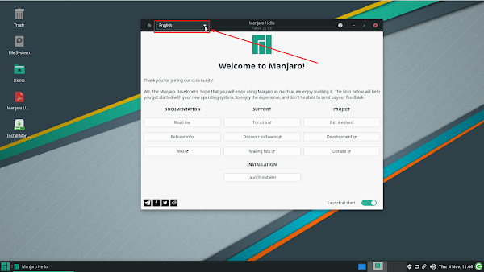
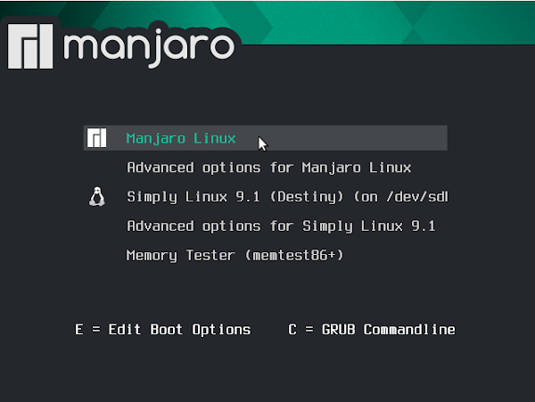

Шаг 1: получение ISO
Мы заходим на сайт Manjaro и скачиваем образ
Шаг 2: запись ISO
После того, как у нас есть ISO, нам нужно записать его на USB-накопитель.
Используйте флэш-диск 4GB или больше, чтобы избежать каких-либо хлопот.
Вы можете следовать руководству по
как создать загрузочный USB Manjaro Linux
,
я предпочитаю использовать программу
Win32DiskImager
Шаг 3: загрузка в живую среду
После записи ISO-образа на диск мы можем загрузиться в среду установки Manjaro Live
Следуйте инструкциям производителя вашего ПК для загрузки с USB-накопителя.
После выбора диска Manjaro, вы увидите это меню, нажимайте
Enter
Шаг 4: фактическая установка Manjaro Linux
После запуска у вас откроектся приветсвенное окно где надо поменять язык в левом верхнем углу
и нажать Запустить

И мы попадаем в полноценный Установщик Manjaro Linux, где остаётся всего лишь нажать на
кнопку Далее
В следующем окне выбора вашего Местоположения ничего не меняем (если вы находитесь в другом часовом
поясе Мира, можете выбрать любой другой),
дальше жмём на Далее
В следующем окне настроек Клавиатуры, также ничего не меняем, а жмём на Далее
После чего попадаем в Разметчик дисков/носителей, где перечислены варианты разметки диска:
Поскольку я устанавливаю это на виртуальную машину, у меня нет опции «Установить рядом».
Однако, если вы устанавливаете на реальное физическое устройство, вы увидите четыре варианта.
Установите рядом с: Уменьшает пространство из раздела и устанавливает Manjaro в пространство рядом с
другой ОС. Идеально для начинающих.
Заменить раздел: Заменяет выбранный раздел на Манджаро.
Стереть диск: Стирает весь диск (включая Windows и его данные) и присваивает его Manjaro.
Ручное разбиение: Выберите свою собственную схему разбиения. Вы должны по крайней мере выбрать раздел
EFI (/ boot / efi) и корневой (/) раздел
После выбора того что вам нужно нажимайте на Далее
И теперь перед нами форма ввода наших пользовательских данных.
Собственно говоря, что мы и делаем, как на скринах (есть несколько вариантов их ввода, включая режим
авторизации.
Какой выбирать? Решать вам...) и жмём на Далее
Далее, перед установкой, мы видим полную сводку всех выполненных нами настроек и манипуляций (т.к.
сводка длинная, нужно пролистать её, чтобы увидеть всё, что мы с вами делали).
И, наконец, после просмотра сводки, жмём на Установить
И на предупреждение Установщика, что в случае продолжения установки, Отменить эти изменения будет
невозможно, жмём на
Притсупить к установке (или Назад, если что-то не так пошло):
Ну, и теперь набираемся терпения и ждём окончания Установки:
После загрузки и установки всех компонентов системы мы попадаем в окно с информацией об
окончании установки Manjaro Linux
Где вашаем галочку на Перезагрузить и жмём на Готово:
После чего происходит Перезагрузка системы и вход в Загрузчик (GRUB), где, чтобы войти во вновь
установленную нами
систему Manjaro Linux 21.1.6 Pahvo нажимаем на
клавиатуре на Enter или просто ждём 9 сек, ничего не делая, и система автоматически начнёт
загружаться:

Ну, и по финалу, давайте посмотрим на Интерфейс нашей системы:
Конец!